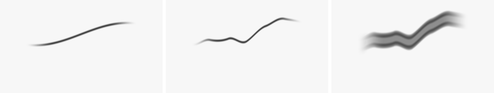
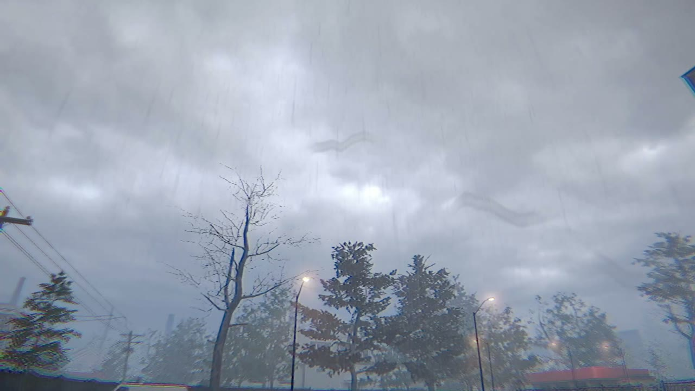

The goal
Farsight is about bad eyesight, so we gave your eyes floaters, those little see-through squiggles you notice when you look at a bright sky.
Floaters are inside your eye, so they stay even when your glasses come off. They drift away when you try to look at them, and you mostly only see them against something bright.
How it works
They're drawn in the same screen pass as the rain on your glasses. The shader draws them, and a small C# spring moves them around as you look about.
1. Drawing a strand
Each floater starts as a sine wave. We add a second, faster wave and some noise so it looks less perfect, then draw it as a see-through tube with darker edges and a few little clumps along it.

float wave = sin(q.x * (1.9 + k * 0.7) + k * 1.7 + t * 0.03) * 0.2
+ sin(q.x * 4.1 + k * 3.3) * 0.08
+ (vnoise(float2(q.x * 3.0, k * 7.0)) - 0.5) * 0.25;2. Only against bright areas
How visible they are depends on how bright the scene is behind them. Against the sky you can see them clearly, and in darker spots they pretty much disappear, same as real ones.

3. Following your eye
They shouldn't be stuck to the camera. When you turn your head they swing the other way on a spring, then settle back and slowly sink. That lag is what makes them feel like they're actually floating in there.
floaterVel += new Vector2(-yaw, -pitch) * floaterLag * 6f;
floaterVel += (-floaterPos * 1.2f + Vector2.down * 0.01f) * dt;
floaterVel *= Mathf.Exp(-dt * 2.2f);
floaterPos += floaterVel * dt;The footage is from the game, with the floaters turned up from 0.12 to 0.35 so you can see them at this size. The strand images were rendered with a Python port of the shader.